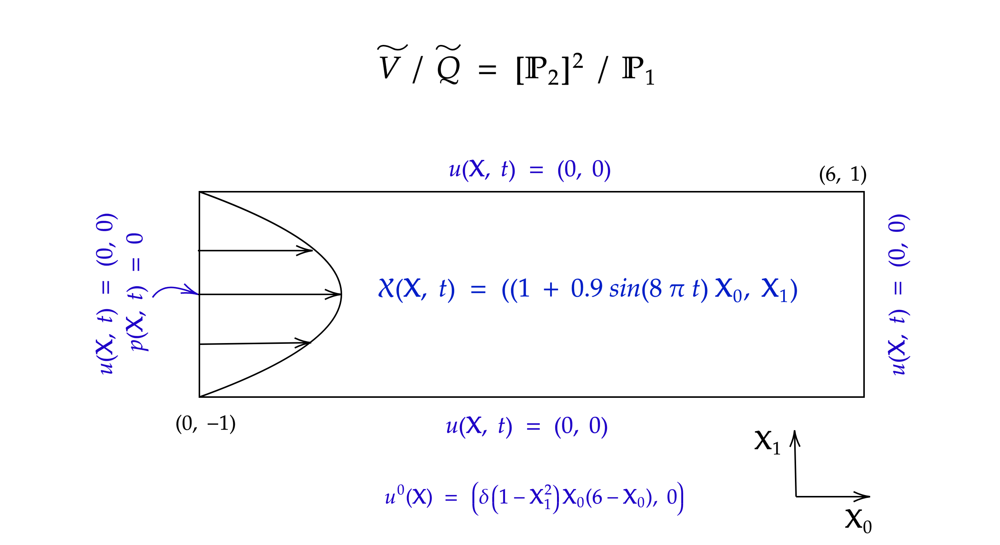

On Chorin-Temam schemes for the iNSE in moving domains
and its application to left ventricular FSI
Joint work with Cristobal Bertoglio.
Reidmen Aróstica - October 26, 2021, University of Groningen.
General Formulation
Given a conforming finite element space $\mathbf{V} \times \mathbf{Q}$ of $\mathbf{H}^1(\Omega^0) \times L^2_0(\Omega^0)$ for the velocity and pressure fields, the discrete problem reads
Find $(\mathbf{u}^{n+1}, p^{n+1}) \in \mathbf{V}\times \mathbf{Q}$ s.t.: \begin{equation} \mathcal{A}(\mathbf{u}^{n+1}, \mathbf{v}) - \mathcal{B}(\mathbf{v}, p^{n+1}) + \mathcal{B}(\mathbf{u}^{n+1}, q) = \mathcal{F}(\mathbf{v}) \quad \forall (\mathbf{v}, q) \in \mathbf{V}\times \mathbf{Q} \end{equation}
being \begin{equation} \begin{aligned} \mathcal{A} (\mathbf{u}, \mathbf{v}) := & \int_{\Omega^0} \rho \frac{J^{\star\star}}{\tau} \mathbf{u} \cdot \mathbf{v} \, \text{d}\mathbf{X} + \int_{\Omega^0} \rho J^{\star} Grad(\mathbf{u}) H^{\star} (\mathbf{u}^{\ast} - \mathbf{w}^{\ast\ast}) \cdot \mathbf{v} \, \text{d}\mathbf{X} + \int_{\Omega^0} J^{\star} 2\mu \epsilon^{\star}(\mathbf{u}):\epsilon^{\star}(\mathbf{v}) \, \text{d}\mathbf{X} \\ & + \alpha \color{blue}{\int_{\Omega^0} \frac{\rho}{2} \left( \frac{J^{n+1} - J^{n}}{\tau} - Div\left( J^{\star} H^{\star} \mathbf{w}^{\ast\ast} \right) \right) \mathbf{u} \cdot \mathbf{v} \, \text{d}\mathbf{X}} + \beta \int_{\Omega^0} \frac{\rho}{2} Div\left( J^{\star} H^{\star} \mathbf{u}^{\ast} \right) \mathbf{u} \cdot \mathbf{v} \, \text{d}\mathbf{X} \end{aligned} \end{equation}
with $\alpha, \beta \in \{0, 1\}$ given parameters, and \begin{equation} \begin{aligned} \mathcal{B}(\mathbf{u}, q) & := \int_{\Omega^0} Div\left( J^{\star} H^{\star} \mathbf{u} \right) q \, \text{d}\mathbf{X} \quad \forall q \in Q, \quad \mathcal{F}(\mathbf{v}) := \int_{\Omega^0} \rho \frac{J^{\star\star}}{\tau} \mathbf{u}^n \cdot \mathbf{v} \, \text{d}\mathbf{X} \quad \forall \mathbf{v} \in \mathbf{V} \end{aligned} \end{equation}
The term multiplying $\alpha$ is the discrete residual of GCL, while the one multiplying $\beta$ is a strongly consistent term vanishing for incompressible velocity fields.
Is it general enough?
- Using $\alpha = \beta = 0$
- $(\star, \star\star, \ast, \ast\ast) = (n, n, n+1, n)$ is used by Basting et al. 2007
- $(\star, \star\star, \ast, \ast \ast) = (n, n, n, n)$ by Murea et al. 2016
- $(\star, \star\star, \ast, \ast\ast) = (n+1, n+1, n+1, n+1)$ by Langer et al. 2016
- $(\star, \star\star, \ast, \ast\ast) = (n+1, n+1, n, n+1)$ by Landajuela, 2016
- Using $\alpha = \beta = 1$
- $(\star, \star\star, \ast, \ast \ast) = (n+1, n, n, n+1)$ is used by Lozovskiy et al. 2018
- $(\star, \star\star,\ast, \ast\ast) = (n+1, n, n, n)$ by Smaldone, 2014
- $(\star, \star\star, \ast, \ast\ast) = (n+1, n, n+1, n+1)$ by LeTallec et al. 2001, Wang et al. 2020
Results
Proposition By assuming well-posed, orientation-preserving deformation mappings, i.e. $(J^n)_{n \in \mathbb{N}}$ bounded in $L^{\infty}(\Omega^0), J^n > 0$ for each $n \geq 0$, the Monolithic formulation has unique solution for inf-sup stable finite element spaces if $2J^{\star\star} + J^{n+1} - J^{n} > 0$ and $\alpha = \beta = 1$.
Proposition Under the previous assumptions, $\alpha = \beta = 1$ and $\star\star = n$, the monolithic scheme is unconditionally energy stable, with estimate \begin{equation} \begin{aligned} \int_{\Omega^0} \rho \frac{J^{n+1}}{2\tau} \vert \mathbf{u}^{n+1} \vert^2 \, \text{d} \mathbf{X} - \int_{\Omega^0} \rho \frac{J^n}{2\tau} \vert \mathbf{u}^n \vert^2 \, \text{d}\mathbf{X} &= -\int_{\Omega^0} 2\mu J^{\star} \vert \epsilon^{\star}(\mathbf{u}^{n+1}) \vert^2 \, \text{d} \mathbf{X} \\ & - \int_{\Omega^0} \frac{\rho}{2\tau} J^{n} \vert \mathbf{u}^{n+1} - \mathbf{u}^{n} \vert^2 \, \text{d} \mathbf{X}. \end{aligned} \end{equation}
No restrictions apply to $\star, \ast, \ast\ast$.
Formulation
Given $\mathbf{\widetilde V} $ a conforming space of $\mathbf{H}^1_0 (\Omega^0)$ and $ \widetilde Q$ a conforming space of $ L^2_0 (\Omega^0) \cap H^1(\Omega^0)$, $\tilde{\mathbf{u}}^{0} \in \mathbf{\widetilde V}$, for $n\geq0$:
Pressure-Projection Step $(\text{PPS})_{n}$ Find $p^{n} \in \widetilde{Q}$ s.t. \begin{equation} \int_{\Omega^0} \frac{\tau}{\rho} J^{\circ} Grad(p^{n}) H^{\circ} : Grad(q) H^{\circ} \, \text{d}\mathbf{X} = - \int_{\Omega^0} Div\left( J^{\circ} H^{\circ} \tilde{\mathbf{u}}^{n}\right) q \, \text{d}\mathbf{X} \quad \forall q \in \widetilde{Q} \end{equation}
Fluid-Viscous Step $(\text{FVS})_{n+1}$ Find $\tilde{\mathbf{u}}^{n+1} \in \mathbf{\widetilde{V}}$ s.t. \begin{equation} \begin{aligned} &\int_{\Omega^0} \rho J^{\star\star} \frac{\tilde{\mathbf{u}}^{n+1} - \tilde{\mathbf{u}}^n}{\tau} \cdot \mathbf{v} \, \text{d}\mathbf{X} + \int_{\Omega^0} \rho J^{\star} Grad(\tilde{\mathbf{u}}^{n+1}) H^{\star} (\tilde{\mathbf{u}}^{n} - \mathbf{w}^{\ast\ast}) \cdot \mathbf{v} \, \text{d}\mathbf{X} \\ & + \int_{\Omega^0} J^{\star} 2 \mu \epsilon^{\star} (\tilde{\mathbf{u}}^{n+1}) : \epsilon^{\star} (\mathbf{v}) \, \text{d}\mathbf{X} - \int_{\Omega^0} Div(J^{\circ \circ} H^{\circ \circ} \mathbf{v}) p^n \, \text{d}\mathbf{X} \\ &+ \color{green}{\int_{\Omega^0} \frac{\rho}{2} \frac{J^{n+1} - J^{n}}{\tau} \tilde{\mathbf{u}}^{n+1} \cdot \mathbf{v} \, \text{d}\mathbf{X}} + \int_{\Omega^0} \frac{\rho}{2} Div\left( J^{\star} H^{\star}(\tilde{\mathbf{u}}^{n} \color{green}{- \mathbf{w}^{\ast\ast}})\right) \tilde{\mathbf{u}}^{n+1} \cdot \mathbf{v} \, \text{d}\mathbf{X} = 0 \quad \forall \mathbf{v} \in \mathbf{\widetilde{V}} \end{aligned} \end{equation}
Energy result
Proposition Under assumptions $\circ = \circ \circ = \star\star = n$, the solution to the CT formulation is unconditionally stable, with estimate: \begin{equation} \begin{aligned} \int_{\Omega^0} \rho \frac{J^{n+1}}{2\tau} \vert \tilde{\mathbf{u}}^{n+1} \vert^2 \, \text{d}\mathbf{X} - \int_{\Omega^0} \rho \frac{J^{n}}{2\tau} \vert \tilde{\mathbf{u}}^{n} \vert^2 \, \text{d} \mathbf{X} \leq & - \int_{\Omega^0} J^{\star} 2\mu \vert \epsilon^{\star} (\tilde{\mathbf{u}}^{n+1}) \vert^2 \, \text{d}\mathbf{X} \\ & - \int_{\Omega^0} J^{n} \frac{\tau}{2\rho} \vert Grad(p^n) H^{n} \vert^2 \, \text{d}\mathbf{X} . \end{aligned} \end{equation}
Test case (2D)
What should we measure?
The results are assessed using time-varying normalized parameters $\delta_{\text{M}}^{m}, \delta_{\text{CT}}^{m}$ defined by \begin{equation} \label{eq:energy_error} \begin{aligned} \delta_{M}^{m+1} &:= D^{m+1} + E_{st}^{\star} + \int_{\Omega_0} \frac{\rho J^{\star\star}}{2\tau} \vert \mathbf{u}^{m+1} - \mathbf{u}^{m} \vert^2 \, \text{d}\mathbf{X} \\ \delta_{CT}^{m+1} &:= D^{m+1} + E^{\star}_{st} + \int_{\Omega_0} \frac{\tau J^{\circ}}{2 \rho} \vert (H^{\circ})^T Grad(p^m) \vert^2 \, \text{d}\mathbf{X} \\ D^{m+1} &:= \int_{\Omega_0} \frac{\rho}{2\tau} \left( J^{m+1} \vert \mathbf{u}^{m+1} \vert^2 - J^m \vert \mathbf{u}^m \vert^2 \right) \, \text{d}\mathbf{X} , \quad E^{\star}_{st} = \int_{\Omega_0} 2 \mu J^{\star} \vert \epsilon^{\star} (\mathbf{u}^{n+1}) \vert^2 \, \text{d}\mathbf{X}. \end{aligned} \end{equation}
Using the previous propositions $\delta_{\text{M}}^{m}=0$ and $\delta_{\text{CT}}^{m} \leq 0$ if $\star\star = n$.We test Monolithic (M)schemes with $(\star, \ast, \ast\ast) = (n+1, n, n+1)$ for $\star\star \in \{n, n+1\}$ and Chorin-Temam (CT) schemes in the form $(\star, \ast\ast, \circ, \circ\circ) = (n+1, n+1, n, n)$
Numerical result
Summary of the numerical experiment in terms of energy balance.
Left: Monolithic residual error values $\hat{\delta}_{\text{M}}$,
Right: Chorin-Temam residual error values $\hat{\delta}_{\text{CT}}$.
Test case (3D)
- We simulate a physiological hyperelastic material, modeling heart contraction with $\mathbb{P}_2$ elements.
- Then simulation of the iNSE-ALE is done using a stable CT scheme with $\mathbb{P}_1/\mathbb{P}_1$ elements.
- Such CT scheme is taken with $(\circ, \circ\circ, \star, \star \star) = (n, n, n+1, n)$
Numerical result
Given displacement fields we simulate a fluid inside.
Why a benchmark?
- Reproducibility of others' results.
- Support collaboration with clinicians (
Have you validated your model? ) - Propose modeling strategies (choice of constitutive models, boundary conditions and parameter value ranges).
Existing benchmark
-
Land et al. proposed a first benchmark for cardiac mechanics, but it lacks some relevant characteristics. - Aspects such as geometry dimensions, physiological passive, active modeling and boundary conditions should be taken into account.
- Only software verification, not yet model validation.
- We aim to propose a new set of cardiac benchmark problems and solutions for assessing passive and active material behavior.
Land et al. (2015) Verification of cardiac mechanics software: benchmark problems and solutions for testing active and passive material behaviour. Proceeding of the Royal Society A: Math., Phys. and Eng. Sciences, 471(2184), 20150641.
Strong Formulation
Denoting $\mathbb{T} := \mathbb{T}(u)$ the Cauchy stress tensor for a displacement field $u$ such that $\mathbb{S} := F^{-1} \mathbb{T} F^{-T}$, we are interested in: \begin{equation} \begin{aligned} \color{red}{\rho \ddot{u}} - Div\big( J \mathbb{T} F^{-T} \big) & = \mathbf{0} \quad \text{ in } \Omega \\ \mathbb{T} J F^{-T} N &= pJ F^{-T} N \quad \text{ on } \Gamma_{endo} \\ \color{red}{\mathbb{T} J F^{-T} N \cdot N + \alpha_{epi} u \cdot N + \beta_{epi} \dot{u} \cdot N} & = 0 \quad \text{ on } \Gamma_{epi} \\ \mathbb{T} J (F^{-T} N) \times N & = 0 \quad \text{ on } \Gamma_{epi} \\ \color{red}{\mathbb{T} J F^{-T} N + \alpha_{top} u + \beta_{top} \dot{u}} & = \mathbf{0} \text{ on } \Gamma_{top} \end{aligned} \end{equation}
where $N$ denotes the normal direction, with $p = 0$ at the $\Gamma_{endo}$.
Pfaller et al. (2019) The importance of the pericardium for cardiac biomechanics: from physiology to computational modeling. Biomechanics and Modeling in Mechanobiology 18, 503–529.
Constitutive Model
We consider the heart material behavior characterized via the 2nd Piola-Kirchhoff stress tensor $\mathbb{S}$ \begin{equation} \mathbb{S}(t) := \frac{\partial \Psi_{aniso}}{\partial \mathbb{E}} + \color{red}{\frac{\partial \Psi_{visco}}{\partial \dot{\mathbb{E}}}} + \color{red}{\tau(t)} f \otimes f, \quad t > 0 \end{equation}
-
The
Holzapfel & Ogden energy $\Psi_{aniso}$ with Simo & Miehe incompressibility penalty for $\kappa > 0$: \begin{equation} \begin{array} \quad \Psi_{aniso} &= \frac{a}{2b} \exp \big \{ b (\bar{I}_1 - 3) \big \} + \sum_{i \in \{f, s\} } \frac{a_i}{2b_i} \chi (I_{4i}) \big( \exp \big \{ b_i (I_{4i} - 1)^2 \big \} - 1 \big) \\ & + \frac{a_{fs}}{2 b_{fs}} \big( \exp \{ b_{fs}I_{8fs}^2 \} - 1 \big) + \frac{\kappa}{4} \big( J^2 - 1 - 2 ln(J) \big) \end{array} \end{equation} - Viscoelastic energy with parameters $\eta>0$: \begin{equation} \color{red}{\Psi_{visc} := \frac{\eta}{2} tr( \dot{\mathbb{E}}^{2})} \end{equation}
-
Time-dependent active stress $\tau(t) f \otimes f$ with
Bestel et al. stress function $\tau(t)$ solution to: \begin{equation} \color{red}{\dot{\tau}(t) = - \vert a(t) \vert \tau(t) + \sigma_0 \vert a(t) \vert_{+}} \end{equation}
Holzapfel & Ogden. (2009) Constitutive modelling of passive myocardium: a structurally based framework for material characterization. Phy. Trans. of the Royal Soc. A: Mathematical, Physical
and Engineering Sciences, 367(1902), 3445–3475.
Bestel et al. (2001) A Biomechanical Model of Muscle Contraction. Medical Image Computing and Computer-Assisted Intervention at MICCAI 2001. Lecture Notes
in Computer Science, vol 2208. Springer, Berlin, Heidelberg
Parameters
-
Density $\rho$, viscosity $\eta$, incompressibility penalty $\kappa$ and activation stress funtion parameters as in
Pfaller et al. :$\sigma_0$ [Pa] $\gamma$ [s] $\alpha_{min}$ [..] $\alpha_{max}$ [..] $t_{sys}$ [s] $t_{dias}$ [s] $10^{5}$ 0.005 -30 5 0.17 0.484 $\alpha_{top}$ $\alpha_{epi}$ $\beta_{top}$ $\beta_{epi}$ $10^{5}$ $10^{5}$ $5\times 10^{3}$ $5\times 10^{5}$ -
Fiber angles are taken with $\alpha_{endo} = +60^{\circ}, \alpha_{epi}=-60^{\circ}$ and material parameter as in
Holzapfel & Ogden :$a$ [Pa] $a_f$ [Pa] $a_{fs}$ [Pa] $a_{s}$ [Pa] 59.0 18472.0 216.0 2481.0 $b$ [..] $b_f$ [..] $b_{fs}$ [..] $b_{s}$ [..] 8.023 16.026 11.436 11.12
Pfaller et al. (2019) The importance of the pericardium for cardiac biomechanics: from physiology to computational modeling.
Biomechanics and Modeling in Mechanobiology 18, 503–529.
Holzapfel & Ogden. (2009) Constitutive modelling of passive myocardium: a structurally based framework for material characterization. Phy. Trans. of the Royal Soc. A: Mathematical, Physical
and Engineering Sciences, 367(1902), 3445–3475.
Results for $\mathbb{P}_2$ and $p =0$ at $\Gamma_{endo}$
Closely matches simulation results obtained at the Institute of Computational Mechanics, TU Munich.
III. Summary
Summary & Perspectives
- Propose a first idea for a physiological cardiac mechanics benchmark.
- Provide results for verification of new software and/or model components.
- Some groups already contacted, other will soon after.
- Joint paper with verification, an possibly validation.
- Still to be discussed:
- Inclusion of endocardial pressure / lumped parameter model?
- Add e.g. infaction, irregular electrical activation, prestress
- Output quantities: strains, stresses?
- Working setup: (pseudo-) anonymous?
Questions? https://bit.ly/3hfJ2LI

Contact Information
- c.a.bertoglio@rug.nl
- r.a.arostica.barrera@rug.nl
https://bit.ly/3hfJ2LI
Summary
- Several reported time discretization schemes for the iNSE-ALE are analyzed, and their stability analysis is confirmed by numerical experiments.
- For the monolithic case, well-posed energy-stable problems are obtained whenever $\color{green}{\alpha = \beta = 1, \, \star\star = n}$.
- To the best of the authors knowledge, the unconditionally stable Chorin-Temam scheme derived here has not been reported yet.
Спасибо!, Thank you!